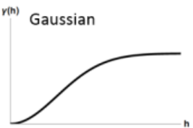

Modeling
Misc
- {{flowcluster} - Functions for clustering origin-destination (OD) pairs, representing desire lines (or flows).
- Includes:
- Creating distance matrices between OD pairs
- Passing distance matrices to a clustering algorithm
- The current distance matrix is an implementation of the flow distance and flow dissimilarity measures
- Can aggregate the flows in each cluster into a single line representing the average flow direction and magnitude
- Includes:
- {GWnnegPCA} - Geographically Weighted Non-Negative Principal Components Analysis
- {lagsarlmtree} - Model-based linear model trees adjusting for spatial correlation using a simultaneous autoregressive spatial lag
- The linear model is a SLM econometric spatial regression model imported from spatialreg (See Regression, Spatial >> Econometric)
- {loopevd} - Performs extreme value analysis at multiple locations using functions from the ‘evd’ package. Supports both point-based and gridded input data using the ‘terra’ package, enabling flexible looping across spatial datasets for batch processing of generalised extreme value, Gumbel fits
- {mlr3spatial} - Extends the ‘mlr3’ ML framework with methods for spatial objects. Data storage and prediction are supported for packages ‘terra’, ‘raster’ and ‘stars’.
- {RandomForestsGLS} - Generalizaed Least Squares RF
- Takes into account the correlation structure of the data. Has functions for spatial RFs and time series RFs
- {sfclust} - Bayesian Spatial Functional Clustering
- {SLGP} - Spatial Logistic Gaussian Process for Field Density Estimation
- Can be used for density prediction, quantile and moment estimation, sampling methods, and preprocessing routines for basis functions.
- Applications arise in spatial statistics, machine learning, and uncertainty quantification.
- {SpatialDownscaling} - Methods for Spatial Downscaling Using Deep Learning
- The aim of the spatial downscaling is to increase the spatial resolution of the gridded geospatial input data.
- Contains two deep learning based spatial downscaling methods: super-resolution deep residual network (SRDRN) and UNet (Paper)
- Can optionally account for cyclical temporal patterns in case of spatio-temporal data
- {spatialfusion} - Multivariate Analysis of Spatial Data Using a Unifying Spatial Fusion Framework
- {spatialRF} - Explanatory spatial regression models by combining Random Forest with spatial predictors that help the model reduce the spatial autocorrelation of the residuals and return honest variable importance scores.
- {spatialsample} - {tidymodels} spatial cross-validation
- {spNNGP} (Vignette) - Provides a suite of spatial regression models for Gaussian and non-Gaussian point-referenced outcomes that are spatially indexed. The package implements several Markov chain Monte Carlo (MCMC) and MCMC-free nearest neighbor Gaussian process (NNGP) models for inference about large spatial data.
- {spVarBayes} (Paper, Tutorial) - Provides scalable Bayesian inference for spatial data using Variational Bayes (VB) and Nearest Neighbor Gaussian Processes (NNGP). All methods are designed to work efficiently even with 100,000 spatial locations, offering a practical alternative to traditional MCMC.
- Models
- spVB-MFA, spVB-MFA-LR, and spVB-NNGP. All three use NNGP priors for the spatial random effects, but differ in the choice of the variational families.
- spVB-NNGP uses a correlated Gaussian variational family with a nearest neighbor-based sparse Cholesky factor of the precision matrix.
- spVB-MFA and spVB-MFA-LR use a mean-field approximation variational family.
- Additionally, spVB-MFA-LR applies a one-step linear response correction to spVB-MFA for improved estimation of posterior covariance matrix, mitigating the well-known variance underestimation issue of mean-field approximation
- Allows for covariates (i.e., fixed effects), enabling inference on the association of these with the outcome via the variational distribution of the regression coefficients. Variational distributions for the spatial variance and random error variance are also estimated, as in a fully Bayesian practice
- Simulation studies demonstrate that spVB-NNGP and spVB-MFA-LR outperform the existing variational inference methods in terms of both accuracy and computational efficiency. both spVB-NNGP and spVB-MFA-LR produce inference on the fixed and random effects that align closely with those obtained from the MCMC-based spNNGP, but at reduced computational cost.
- Models
- {varycoef} - Implements a maximum likelihood estimation (MLE) method for estimation and prediction of Gaussian process-based spatially varying coefficient (SVC) models
- {vmsae} - Variational Autoencoded Multivariate Spatial Fay-Herriot model for efficiently estimating population parameters in small area estimation
Notes from
Resources
- Spatial Microsimulation with R - Teaches techniques for generating and analyzing spatial microdata to get the ‘best of both worlds’ from real individual and geographically-aggregated data
- Spatial Microdata Simulations are:
- Approximations of individual level data at high spatial resolution by combining individual and geographically aggregated datasets.: people allocated to places. (i.e. population synthesis)
- An approach to understanding multi level phenomena based on spatial microdata — simulated or real
- Geographically aggregated data are called constraints and the individual level survey data are called microdata
- Spatial Microdata Simulations are:
- Applied Machine Learning Using mlr3 in R, Ch.13.5
- Spatial Microsimulation with R - Teaches techniques for generating and analyzing spatial microdata to get the ‘best of both worlds’ from real individual and geographically-aggregated data
Papers
- A multivariate spatial model for ordinal survey-based data ({nimble} Code)
- Soil texture prediction with Bayesian generalized additive models for spatial compositional data
- Uses {brms} to fit a Bayesian GAM to model a compositional response. Model includes variables for elevation, slope, longitude, latitude
CV
- A common case is where sample data are collected opportunistically (“whatever could be found”), and are then used in a predictive framework that does not weight them.
- This has a consequence that the resulting model may be biased towards over-represented areas (in predictor space and/or in spatial coordinates space), and that simple (random) cross-validation statistics may be over-optimistic when taken as performance measures for spatial prediction
- Adaptive cross-validation measures such as spatial cross-validation may help getting more relevant measures for predictive performance.
- Standard CV methods
- For clustered data and interpolative and predictive use cases, it generally leads to overoptimistic performance metrics when the data has significant spatial autocorrelation.
- For random and regular distributed data and interpolative and predictive use cases, correctly ranked the models even when the data has significant spatial autocorrelation.
- Spatial CV Types: Spatial Blocking, Clustering, Sampling-Intensity-Weighted CV, Model-based Geostatistical Approaches, k-fold nearest neighbour distance matching (kNNDM) CV
- A common case is where sample data are collected opportunistically (“whatever could be found”), and are then used in a predictive framework that does not weight them.
Design-based Approach: Assumes data comes from (spatially) random sampling (randomness in the sample locations), and we are interested in estimating means or totals
- Most standard machine learning methods, assume sample data to be independent which can be valid hen samples are collected by spatially random sampling over the spatial target area
- Uses when:
- Observations were collected using a spatial random sampling process
- Aggregated properties of the entire sample region (or sub-region) are needed
- Estimates are required that are not sensitive to model misspecification, for instance when needed for regulatory or legal purposes
Model-basd Approach: Assumes observations were not sampled randomly, or our interest is in predicting values at specific locations (mapping)
- When predictions for fixed locations are required, a model-based approach is needed and typically some form of spatial and/or temporal autocorrelation of residuals must be assumed.
- Use when:
- Predictions are required for individual locations, or for areas too small to be sampled
- The available data were not collected using a known random sampling scheme (i.e., the inclusion probabilities are unknown, or are zero over particular areas and or times)
Ways to Account for Spatial Autocorrelation
- Add spatial proxies as predictors
- Models
- Generalized-Least-Squares-style Random Gorest (RF–GLS) - Relaxes the independence assumption of the RF model
- Accounts for spatial dependencies in several ways:
- Using a global dependency-adjusted split criterion and node representatives instead of the classification and regression tree (CART) criterion used in standard RF models
- Employing contrast resampling rather than the bootstrap method used in a standard RF model
- Applying residual kriging with covariance modeled using a Gaussian process framework
- From the spatial proxies paper:
- “Outperformed or was on a par with the best-performing standard RF model with and without proxies for all parameter combinations in both the interpolation and extrapolation areas of the simulation study.”
- “The most relevant performance gains when comparing RF–GLS to RFs with and without proxies were observed in the ‘autocorrelated error’ scenario for the interpolation area with regular and random samples, where the RMSE was substantially lower.”
- Accounts for spatial dependencies in several ways:
- Generalized-Least-Squares-style Random Gorest (RF–GLS) - Relaxes the independence assumption of the RF model
{kind=link}
Spatial Proxies
- Notes from Random forests with spatial proxies for environmental modelling: opportunities and pitfalls
- Spatial proxies are a set of spatially indexed variables with long or infinite autocorrelation ranges that are not causally related to the response.
- They are “proxy†since these predictors act as surrogates for unobserved factors that can cause residual autocorrelation, such as missing predictors or an autocorrelated error term.
- Types
- Geographical or Projected Coordinates
- Euclidean Distance Fields (EDFs)(i.e. distance-to variables?)
- Adding distance fields for each of the sampling locations (distance from one location to the other?), i.e. the number of added predictors equals the sample size.
- RFsp
- Tends to give worse results than coordinates when use of spatial proxies is inappropriate for either interpolation or extrapolation.
- But, together with EDFs, it is likely to yield the largest gains when the use of proxies is beneficial.
- Factors that could affect the effectiveness of spatial proxies
- Model Objectives
- Interpolation - There is a geographical overlap between the sampling and prediction areas
- The addition of spatial proxies to tree models such as RFs may be beneficial in terms of enhancing predictive accuracy, and they might outperform geostatistical or hybrid methods
- For Random or Regular spatial distributions of locations, the model should likely benefit, especially if there’s a large amount of spatial autocorrelation.
- For clustered spatial distributions of locations
- For weakly clustered data, strong spatial autocorrelation, and when there’s only a subset of informative predictors or no predictors at all, then models can expect some benefit.
- For other cases of weakly clustered data, there’s likely no affect or a little worse performance.
- For strongly clustered data , it probably worsens performance.
- For weakly clustered data, strong spatial autocorrelation, and when there’s only a subset of informative predictors or no predictors at all, then models can expect some benefit.
- Prediction (aka Extrapolation, Spatial-Model Transferability) - The model is applied to a new disjoint area
- The use of spatial proxies appears to worsen performance in all cases.
- Inference (aka Predictive Inference) - Knowledge discovery is the main focus
- Inclusion of spatial proxies has been discouraged
- Proxies typically rank highly in variable-importance statistics
- High-ranking proxies could hinder the correct interpretation of importance statistics for the rest of predictors, undermining the possibility of deriving hypotheses from the model and hampering residual analysis
- Interpolation - There is a geographical overlap between the sampling and prediction areas
- Large Residual Autocorrelation
- Better performance of models with spatial proxies is expected when residual dependencies are strong.
- Spatial Distribution
- Clustered samples frequently shown as potentially problematic for models with proxy predictors
- Including highly autocorrelated variables, such as coordinates with clustered samples, can result in spatial overfitting
- Model Objectives
Interaction Modeling
- Similar to interpolation but keeps the original spatial units as interpretive framework. Hence, the map reader can still rely on a known territorial division to develop its analyses
- They produce understandable maps by smoothing complex spatial patterns
- They enrich variables with contextual spatial information.
- Notes from {potential} documentation
- Packages
- There are two main ways of modeling spatial interactions: the first one focuses on links between places (flows), the second one focuses on places and their influence at a distance (potentials).
- Use Cases
- Retail Market Analysis: A national retail chain planning expansion in a metropolitan area would use potential models to identify optimal new store locations. The analysis would calculate the “retail potential†at various candidate sites
- Based on:
- Population density in surrounding neighborhoods
- Income levels (as a proxy for purchasing power)
- Distance decay function (people are less likely to travel farther to shop)
- Existing competitor locations
- Calculate distance matrix from potential site to competitor location
- Result:
- A retail chain might discover that a location with moderate nearby population but situated along major commuter routes has higher potential than a site with higher immediate population but poor accessibility. T
- The potential model would create a continuous surface showing retail opportunity across the entire region, with the highest values indicating prime locations for new stores
- Based on:
- Transportation Planning: Regional transportation authorities use potential models to optimize transit networks.
- They would:
- Map population centers (origins) and employment centers (destinations)
- Calculate interaction potential between all origin-destination pairs
- Weight these by population size and employment opportunities
- Apply distance decay functions reflecting willingness to commute
- Result:
- The resulting model might reveal corridors with high interaction potential but inadequate transit service. For instance, a growing suburban area might show strong potential interaction with a developing business district, but existing transit routes might follow outdated commuting patterns.
- The potential model helps planners identify where new bus routes, increased service frequency, or even rail lines would best serve actual travel demand.
- They would:
- Hospital Accessibility Study: Public health departments use potential models to identify healthcare deserts.
- They would:
- Map existing hospital and clinic locations with their capacity (beds, specialties)
- Calculate accessibility potential across the region
- Weight by demographic factors (elderly population, income levels)
- Apply appropriate distance decay functions (emergency vs. specialist care have different distance tolerances)
- Result:
- The model might reveal that while a rural county appears to have adequate healthcare on paper (population-to-provider ratio), the spatial distribution creates areas with extremely low healthcare potential.
- This analysis could justify mobile clinics, telemedicine investments, or targeted subsidies for new healthcare facilities in specific locations to maximize population benefi
- They would:
- Retail Market Analysis: A national retail chain planning expansion in a metropolitan area would use potential models to identify optimal new store locations. The analysis would calculate the “retail potential†at various candidate sites
- Comparisons ({potential}article)
- GDP per capita (cloropleth)
- Typical cloropleth at the municipality level
- Values have been binned
- Potential GDP per Capita (interaction)
- Stewart Potentials have smoothed the values
- Municipality boundaries still intact, so you could perform an analysis based on these GDP regions
- Smoothed GDP per Capita (interpolation)
- Similar results as the interaction model except there are no boundaries
- GDP per capita (cloropleth)
{kind=link}
{kind=link}
{kind=link}
Interpolation
Misc
- The process of using points with known values to estimate values at other points. In GIS applications, spatial interpolation is typically applied to a raster with estimates made for all cells. Spatial interpolation is therefore a means of creating surface data from sample points.
- Packages
- {BMEmapping} - Spatial Interpolation using Bayesian Maximum Entropy (BME)
- Ssupports optimal estimation using both precise (hard) and uncertain (soft) data, such as intervals or probability distributions
- {gstat} - OG; Has idw and various kriging methods.
- {intamap} (Paper) - Procedures for Automated Interpolation (Edzer Pebesma et al)
- One needs to choose a model of spatial variability before one can interpolate, and experts disagree on which models are most useful.
- {interpolateR} - Includes a range of methods, from traditional techniques to advanced machine learning approaches
- Inverse Distance Weighting (IDW): A widely used method that assigns weights to observations based on their inverse distance.
- Cressman Objective Analysis Method (Cressman): A powerful approach that iteratively refines interpolated values based on surrounding observations.
- RFmerge: A Random Forest-based method designed to merge multiple precipitation products and ground observations to enhance interpolation accuracy.
- RFplus: A novel approach that combines Random Forest with Quantile Mapping to refine interpolated estimates and minimize bias.
- {mbg} - Interface to run spatial machine learning models and geostatistical models that estimate a continuous (raster) surface from point-referenced outcomes and, optionally, a set of raster covariates
- {spatialize} (Paper) - Implements ensemble spatial interpolation, a novel method that combines the simplicity of basic interpolation methods with the power of classical geoestatistical tools
- Stochastic modelling and ensemble learning, making it robust, scalable and suitable for large datasets.
- Provides a powerful framework for uncertainty quantification, offering both point estimates and empirical posterior distributions.
- It is implemented in Python 3.x, with a C++ core for improved performance.
- {BMEmapping} - Spatial Interpolation using Bayesian Maximum Entropy (BME)
- Resources
- In Spatial Filtering or Smoothing, the unobserved values (\(S(s)\)) are simulated and a white noise component (\(\epsilon\)) (possibly reflecting measuerment error) is included such that
\[ Z(s) = S(s) + \epsilon \]- In Kriging, \(Z(s)\) is estimated through a model
- Measurements can have strong regional variance, so the geographical distribution of measurements can have a strong influence on statistical estimates.
- Example: Temperature
- Two different geographical distributions of sensors

- A concentration of sensors in North can lead to a cooler average regional temperature and vice versa for the South.
- Distribution of temperatures across the region for 1 day.

- With this much variance in temperature, a density of sensors in one area can distort the overall average.
- Interpolation evens out the geographical distribution of measurments

- Two different geographical distributions of sensors
- Example: Temperature
Inverse Distance Weighted (IDW)
IDW (inverse distance weighted) and Spline interpolation tools are referred to as deterministic interpolation methods because they are directly based on the surrounding measured values or on specified mathematical formulas that determine the smoothness of the resulting surface
A weighted average, using weights inverse proportional to distances from the interpolation location
\[ \begin{align} &\hat z(s_0) = \frac{\sum_{i=1}^m w_i z(s_i)}{\sum_{i=1}^n w_i} \\ &\text{where} \;\; w_i = |s_o - s_i|^{-p} \end{align} \]- \(p\) : The inverse distance power which is typically 2 or optimized via CV
Example: NO2 in Germany
pacman::p_load( ggplot2, sf, stars, gstat ) dat_no2 <- readr::read_csv(system.file("external/no2.csv", package = "gstat"), show_col_types = FALSE) crs <- st_crs("EPSG:32632") shp_de <- read_sf("https://raw.githubusercontent.com/edzer/sdsr/main/data/de_nuts1.gpkg") |> st_transform(crs) sf_no2 <- st_as_sf(dat_no2, crs = "OGC:CRS84", coords = c("station_longitude_deg", "station_latitude_deg")) |> st_transform(crs) ggplot() + # germany shapefile geom_sf(data = shp_de) + # locations colored by value geom_sf(data = sf_no2, aes(color = NO2))- The variable of interest is values of NO2 pollution at various locations in Germany
grid_de <- st_bbox(shp_de) |> st_as_stars(dx = 10000) |> st_crop(shp_de) idw_no2 <- idw(NO2 ~ 1, sf_no2, grid_de) ggplot() + # interpolation fill geom_stars( data = idw_no2, aes(x = x, y = y, fill = var1.pred) ) + # shapefile as a string geom_sf(data = st_cast(shp_de, "MULTILINESTRING")) + # locations geom_sf(data = sf_no2) + xlab(NULL) + ylab(NULL)- IDW requires a grid. dx says the cells of the grid have 10000m (10km) width which results in 10km x 10km cells.
- The grid isn’t very fine and is visible if you zoom-in.
- NO2 ~ 1 specifies an intercept-only (unknown, constant mean) model for (aka ordiary kriging model)
- The polygons as strings looks janky (esp zoomed in), but this code this way doesn’t work otherwise. I’m sure there has to be a way to do this with polygons though.
- The ordering of the layers is important. The interpolation fill must be first.
{kind=link}
{kind=link}
Kriging

Misc
Packages
- {automap} - An automatic kriging is done by automatically estimating the variogram and then calling {gstat}
- Similar to using
gstat::vgm("<model>"). According to Pebesma, “Slightly different defaults for fitting, definitely different defaults when computing the sample variogram, and has options for combining distance bins.”
- Similar to using
- {FRK} - Fixed Rank Kriging
- Uses the EM algorithm for Gaussian and the Laplace Apprximation for non-Gaussian data.
- Supports the modelling of non-Gaussian data (e.g., Poisson, binomial, negative-binomial, gamma, and inverse-Gaussian) by employing a generalized linear mixed model (GLMM) framework
- The approach models the field, and hence the covariance function, using a set of basis functions, and facilitates the modelling of big data
- {geoR} (Vignette, Tutorials) - Geostatistical analysis including variogram-based, likelihood-based, and Bayesian methods.
- {psgp} - Implements projected sparse Gaussian process Kriging
- {rlibkriging} - Interface to libKriging C++ library that should provide most standard Kriging / Gaussian process regression features (like in ‘DiceKriging’, ‘kergp’ or ‘RobustGaSP’ packages).
- {snapKrig} - Fast Kriging and Geostatistics on Grids with Kronecker Covariance
- Kronecker products in these models provide shortcuts for solving large matrix problems in likelihood and conditional mean, making ‘snapKrig’ computationally efficient with large grids.
- Package supplies its own S3 grid object class. Has a comprehensive vignette; handles sf, terra, raster objects; so it shouldn’t be too difficult to use.
- {automap} - An automatic kriging is done by automatically estimating the variogram and then calling {gstat}
Notes from
- Spatial Data Science, Ch. 12
- ArcGIS Pro: How Kriging works - General overview
- An Algorithmic Approach to Variograms
- Manual coding of variograms with linear, gaussian, and matern models.
- Various preprocessing steps. Also uses MAD instead of semivariance to measure spatial dependence.
- Spatial Sampling With R, Ch.13, Ch. 21 (Github) - Kriging, Simulation
{gstat} Kriging Functions
Function Description krigeSimple, Ordinary or Universal, global or local, Point or Block Kriging, or simulation krige.cvkriging cross validation, n-fold or leave-one-out krigeSTTgTrans-Gaussian spatio-temporal kriging krigeSTOrdinary global Spatio-Temporal Kriging. It does not support block kriging or kriging in a distance-based neighbourhood, and does not provide simulation krigeSTSimTBConditional/unconditional spatio-temporal simulation krigeSimCESimulation based on circulant embedding krigeTgTrans-Gaussian kriging using Box-Cox transforms The
krigedocumentation is somewhat lacking since the sf method isn’t there (most workflows probably involve a sf object). The examples in the function reference and in the SDS book don’t include the arguments either, but you can figure them out. If you useshowMethodsit shows you the available classes.showMethods(gstat::krige) #> Function: krige (package gstat) #> formula="formula", locations="formula" #> formula="formula", locations="NULL" #> formula="formula", locations="sf" #> formula="formula", locations="Spatial" #> formula="formula", locations="ST"- So from this, we see it determines the proper method by the class of the object used in the locations argument.
- Typing
gstat:::krige.sf(in RStudio and hitting tab shows it has these arguments:krige(formula, locations, newdata,..., nsim). - The docs say the dots arguments are passed to the
gstatfunction. From the vignette, “The meuse data set: a brief tutorial for the gstat R package”, a variogram mdodel is passed via the model argument (gstatfigures this out if you don’t supply the argument name.)
For Irregularly spaced observations
- In some cases, the nearest n observations may come from a single measurement location, which may lead to sharp jumps/boundaries in the interpolated values.
- This might be solved by using larger neighborhoods, or by setting the omax in
krigeorgstatcalls to the neighbourhood size to select per octant (this should be combined with specifying maxdist).
Check for duplicate locations:
Kriging cannot handle duplicate locations and returns an error, generally in the form of a “singular matrix”.
Examples:
dupl <- sp::zerodist(spatialpoints_obj) # sf dup <- duplicated(st_coordinates(sf_obj)) log_mat <- st_equals(sf_obj) # terra (or w/spatraster, spatvector) d <- distance(lon_lat_mat) log_mat <- which(d == 0, arr.ind = TRUE) # base r dup_indices <- duplicated(df[, c("lat", "long")]) # within a tolerance # Find points within 0.01 distance dup_pairs <- st_is_within_distance(sf_obj, dist = 0.01, sparse = FALSE)
Description
- Gaussian Process prediction for values at unobserved locations
- As a geostatistical method, statistical releationships between locations are calculated and therefore uncertainty estimates are available (unlike in IDW or spline interpolation)
- Assumptions
- Assumes that the spatial variation in the phenomenon represented by the z-values is statistically homogeneous throughout the surface (for example, the same pattern of variation can be observed at all locations on the surface)
- Assumes that the distance between sample points reflects a spatial correlation that can be used to explain variation in the surface
- Considers not only the distances but also the other variables that have a linear relationship with the estimation variables
- Uses a weighted average of the sampled values to predict the value at an unsampled location. The weights are determined by the variogram.
\[ \hat Z(s_i) = \sum_{i = 1}^n w_i Z(s_i) \]- Weights are determined by minimizing the variance of the estimation error, and subject to the constraint that the weights sum to 1.
- Uses a correlated Gaussian process to guess at values between data points

- Uncorrelated - white noise
- Correlated - smooth
- The closer in distance two points are to each other, the more likely they are to have a similar value (i.e. geospatially correlated)
- Example: Temperature
- Fewer known points means greater uncertainty

Variograms
Describes the degree of spatial dependence (\(\gamma\)) in a random field or stochastic process (\(Z(s)\) )
- e.g. A measure of how much two samples taken from the mining area will vary in gold percentage depending on the distance between those samples. Samples taken far apart will vary more than samples taken close to each other.
A decrease of spatial autocorrelation is, equivalently, an increase of semivariance
- If your semivariance returns a constant, your data was not spatially related.
Sample (aka Empirical or Experimental) Variogram
\[ \begin{align} &\hat \gamma(h_i) = \frac{1}{2N(h_i)} \sum_{j=1}^{N(h_i)} (z(s_j) - z(s_j + h'))^2 \\ &\text{where} \;\; h_i = [h_{i, 0}, h_{i, 1}] \; \text{and} \; h_{i, 0} \le h' \lt h_{i, 1} \end{align} \]
- \(\gamma\) : Spatial dependence between a particular pairwise distance
- \(h\) : Geographical (pairwise) distance between two locations
- \(N(h_i)\) : The number of pairs of locations for that particular distance
- \(z\) : Value of the variable you’re interested in at a particular location. (e.g. Temperature)
- \(s_j\) : Location
The sample variogram cannot be computed at every possible distance, \(h\), and due to variation in the estimation, it is not ensured that it is a valid (?) variogram which is needed for interpolation models. To ensure a valid variogram, models (aka Theoretical Variograms) are used to estimate it.
(Some) Variogram Models
-
\[ \gamma' = p(1- e^{-3h / r}) + n \]
- Spatial autocorrelation (via proxy semi-variance on the Y-Axix) doesn’t completely go to zero until distance (X-Axis) is infinity
Gaussian
\[ \gamma' = p(1 - e^{-(h^2/ (\frac{4}{7}r)^2)}) + n \]
Matern

- Does not allow decreasing or oscillating semivariance (sometimes seen in real data)
- Uses a smoothness parameter, kappa
vgmdefault: 0.5autofitVariogramdefault:c(0.05, seq(0.2, 2, 0.1), 5, 10)
Matern with Stein Parameterization

Spherical

\[ \gamma' = \left\{ \begin{array}{lcl} p\left(\frac{3h}{2r} - \frac{h^3}{2r^3}\right) +n & \mbox{if} \; h \le r \\ p + n & \mbox{if} \; h \gt r \end{array}\right. \]- Spatial autocorrelation goes to zero at some distance
-
-
- \(p\): Partial Sill
- The Sill represents the total variance of the data.
- \(h\): Pairwise Distance Between Locations
- \(n\): Nugget
- Represents the variability at very small separation distances, often due to measurement errors or micro-scale (smaller than the sampling distances) variations
- Non-negative (i.e. \(\ge 0\))
- \(r\): Range - The distance in which the difference of the variogram from the sill becomes negligible indictating the pairwise distance at which locations are no longer correlated.
- In models with a fixed sill, it is the distance at which this is first reached
- In models with an asymptotic sill, it is conventionally taken to be the distance when the semivariance first reaches 95% of the sill.
- Positive (i.e. \(\gt 0\))
- \(p\): Partial Sill
Available variogram models in {gstat}
gstat::vgm() #> short long #> 1 Nug Nug (nugget) #> 2 Exp Exp (exponential) #> 3 Sph Sph (spherical) #> 4 Gau Gau (gaussian) #> 5 Exc Exclass (Exponential class/stable) #> 6 Mat Mat (Matern) #> 7 Ste Mat (Matern, M. Stein's parameterization) #> 8 Cir Cir (circular) #> 9 Lin Lin (linear) #> 10 Bes Bes (bessel) #> 11 Pen Pen (pentaspherical) #> 12 Per Per (periodic) #> 13 Wav Wav (wave) #> 14 Hol Hol (hole) #> 15 Log Log (logarithmic) #> 16 Pow Pow (power) #> 17 Spl Spl (spline) #> 18 Leg Leg (Legendre) #> 19 Err Err (Measurement error) #> 20 Int Int (Intercept)
Process: Optimize the parameters of variogram model to fit to the sample variogram estimates.
- {gstat} uses weighted least squares to fit the model
- In SDS Ch. 12.3, there’s code to fit an exponential model using maximum likelihood. The range and sill were a little shorter than the WLS fit which made a steeper curve, but they were pretty similar.
- The steeper the curve near the origin, the more influence the closest neighbors will have on the prediction. As a result, the output surface will be less smooth.
- Instead of the constant mean, denoted by
~ 1, a mean function can be specified, e.g. using~ sqrt(dist)as a predictor variable
Preprocessing
- Detrending (trend.beta) - Often improves variogram model regression, but it also removes/diminishes the effects of spatially correlated covariates
- If your semivariance keeps linearly increasing, try de-trending your data.
- I’m not sure how to do this with
variogram’s trend.beta argument. One of the articles uses almin this way:resids_detrend <- lm(resp ~ long + lat, data)$residual- trend.beta asks for the coefficients though.
- Fixing the range can be a performance enhancer for larger data
- Binning method can make a substantial difference on the variogram results
- Types: equal size, equal width, log-spaced binning
- Bins could also be determined by a grouping variable
- If bin size varies, then bins with particularly large or small numbers of observations can produce outlier variogram estimates
- Detrending (trend.beta) - Often improves variogram model regression, but it also removes/diminishes the effects of spatially correlated covariates
-
samp_vario <- variogram(NO2 ~ 1, sf_no2) mod_vario <- fit.variogram(samp_vario, vgm(psill = 1, model = "Exp", range = 50000, nugget = 1)) plot(samp_vario, mod_vario, plot.numbers = TRUE)- Data is from IDW Example 1. The fit is pretty decent.
- The points are the sample variogram (
variogram) estimates for the observed locations - The line is the fitted variogram (
fit.variogram) using the sample variogram and the model variogram (vgm) - NO2 ~ 1 specifies an intercept-only (unknown, constant mean) model for (aka ordinary kriging model)
- plot.numbers = TRUE adds the labels which are the number of a location pairs within that pairwise distance interval (pairwise distances are binned here)
- The semivariance is the average of the locations in that bin
- These are the np values from the variogram output
- We see the estimates start to tail downwards past the 300km distance, but the label for that distance bin says that only 15 paired locations went into that sample estimate. So it’s probably noise, and it’d be weird for spatial autocorrelation to suddenly increase at such a large distance.
- Additional
variogramarguments:- cressie: Cressie’s estimator that’s robust against outliers
- cutoff: Maximum spatial separation distance between point pairs that are included in semivariance estimates (Default is one-third of the length of the bounding box diagonal)
- dX: Specifies the delta value of a regressor that determines when location pairs are formed. They are formed only if their regressor vakue difference (euclidean norm) satisfies: \(||x_i - x_j|| \le \text{dX}\) (i.e. a tolerance/delta value)
- dx = 0 says only locations in the same value of a “regressor†can be used
- See Geospatial, Spatio-Temporal >> EDA >> Spatial Dependence >> Example 1 for an example where the regressor is a time variable. Therefore, this setting would say that only locations with values (i.e. no NA) in the same time slice (e.g. Apr 14) can form location pairs
- dx = (postive) regressor value says locations that have regressor values with differences up to and including that value can be paired.
- In example mentioned above, this would say that locations that have values up to and including that difference of time lags can be paired.
- With only one regressor, the euclidean norm is an absolute value of the difference.
- With more than one regressor, this looks like \(\sqrt{(x_{1i} - x_{1j})^2 + (x_{2i} - x_{2j})^2}\) where \(x_1\) and \(x_2\) are regressors (e.g. temperature and wind speed).
- With factor variables, dX = 0.5 says only locations within the same stratum can be paired (e.g.
PM10 ~ factor(region)). Probably, dX = 0 would say the same thing. Guessing with integers greater than 0, there’d have to be some kind order to your factor levels that matters.
- dx = 0 says only locations in the same value of a “regressor†can be used
- width: The binwidth distance for the location pairs. (Default: cutoff divided by 15)
- Tthe
vgmarguments (besides model) specify starting values in the estimation process. This is not required anymore. It is possible to callvgm("exp")and function will use an algorithm to choose starting values for that model which I think is recommended now.- You can compare multiple model types by specifying a vector of model types, e.g.
c("Exp", "Sph"), in which case the best fitting model is returned - Process
- The range parameter is taken as 1/3 of the maximum sample variogram distance,
- The nugget parameter is taken as the mean of the first three sample variogram values, and
- The partial sill is taken as the mean of the last five sample variogram values.
- You can compare multiple model types by specifying a vector of model types, e.g.
{kind=link}
{kind=link}
{kind=link}
{kind=link}
Types
Ordinary Kriging (OK) - Assumes that the mean of the study variable is the same everywhere and spatial variability is a random process.
Universal Kriging (UK) (aka Regression-Kriging (RK)) - Assumes that there is an overriding trend in the data.
\[ \begin{align} \hat z (s_0) &= \hat m(s_0) + \hat e(s_o)\\ &= \sum_{k=0}^p \hat \beta_k q_k(s_0) + \sum_{i=1}^n \lambda_i e(s_i) \end{align} \]- Terms
- \(\hat m (s_0)\) : Fitted deterministic part at location, \(s_0\)
- \(\hat e (s_0)\) : Interpolated residual
- \(\lambda_i\) : Kriging weights determined by variogram
- \(q\) : Covariates
- Includes other variables that are meaningfully correlated with the target variable in the kriging model to account for trend
- In ordinary Kriging and conditional simulation (without covariates), it’s assumed that all spatial variability is a random process, characterized by a spatial covariance model.
- Adding variables typically reduces both the spatial correlation in the residuals, as well as their variance, and leads to more accurate predictions and more similar conditional simulations.
- Process: The regression-part is estimated. Then, the residual is interpolated with kriging and added to the estimated trend.
- Some authors reserve the term universal kriging (UK) for the case when only the coordinates are used as predictors. If the deterministic part of variation (drift) is defined externally as a linear function of some auxiliary variables, rather than the coordinates, the term kriging with external drift (KED) is preferred
- Terms
Block Kriging - Uses all the data (i.e. data weighted by distance) to estimate the mean of the variable over the target areas (i.e. polygons)
- It smooths the mean estimate of the area by using the values from neighbors, and by using more data, the estimate has smaller standard errors than just calculating sample means independently.
- Using
aggregategets you the sample mean per area. Block kriging doesn’t assume the average value estimate is independent of neighboring areas.
Conditional Simulation
- Uses the data of the convenience sample as conditioning data and applies Monte Carlo simulation which results in a distribution of a statistic.
- See
- SSWR, Ch.13.1.2 for an example of unconditional simulation where locations are (regularly) randomly sampled and the variance of overall mean (population) estimates is calculated. External variables are included in the variogram and kriging models to account for “trend.”
- (SDS, Ch.12.6) for a basic example of conditional simulation
- Conditional simulation is only recommended if the quality of the data is sufficient, and we may trust that the study variable at the points has not changed since these data have been collected.
- Otherwise Unconditional Simulation (aka Indicator Simulation) is recommended.
krige(nsim = 1, indicator = TRUE)where indicator = TRUE enforces unconditional simulation
- Otherwise Unconditional Simulation (aka Indicator Simulation) is recommended.
- Conditional Simulation Process (SDS, Ch.12.6)
- Carry out a kriging prediction
- Draw a random variable from the normal distribution with mean and variance equal to the kriging variance
- Adds this value to the conditioning dataset
- Find a new random simulation location and repeat process
- Unconditional Simulation Process (SSWR, Ch.13.1.2)
- Select a large number S of random samples with sampling design p.
- Use the model to simulate values of the study variable for all sampling points.
- Estimate for each sample the population mean, using the design-based estimator of the population mean for sampling design p. This results in S estimated population means.
- Compute the variance of the S estimated means.
- Repeat steps 1 to 4 R times, and compute the mean of the R variances.
- For larger datasets, use
krigeSimCE(circular embedding method) orkrigeSTSimTB(turning bands method)
Examples
Example 1: Ordinary Kriging of NO2 in Germany
mod_krig_no2 <- krige(formula = NO2 ~ 1, locations = sf_no2, newdata = grid_de, model = mod_vario) ggplot() + # interpolation fill geom_stars(data = mod_krig_no2, aes(x = x, y = y, fill = var1.pred)) + labs(fill = "NO2") + xlab(NULL) + ylab(NULL) + # polygons to multistring geom_sf(data = st_cast(shp_de, "MULTILINESTRING")) + # points geom_sf(data = sf_no2) + coord_sf(lims_method = "geometry_bbox")- NO2 ~ 1 specifies an intercept-only (unknown, constant mean) model for (aka ordinary kriging model)
- sf_no2 contains observed location geometries (See Inverse Distance Weighting (IDW) >> Example 1)
- grid_de is a grid for predicting values at new locations (See Inverse Distance Weighting (IDW) >> Example 1)
- mod_vario is the fitted variogram model (See Variograms >> Example 1)
Example 2: Block Kriging NO2 in Germany
pacman::p_load( dplyr, ggplot2, sf, gstat ) df_no2_agg <- aggregate(sf_no2["NO2"], by = shp_de, FUN = mean) df_krig_no2 <- krige(NO2 ~ 1, locations = sf_no2, newdata = shp_de, model = mod_vario) tib_krig_samp <- df_krig_no2 |> mutate(sample_mean = df_no2_agg$NO2) |> select(krig_mean = var1.pred, sample_mean) |> # go longer and coerce to factor for facet_wrap tidyr::pivot_longer( cols = 1:2, names_to = "agg_type", values_to = "no2_mean" ) |> # change categories/levels for nicer facet titles mutate(agg_type = forcats::fct_recode(agg_type, Kriging = "krig_mean", Sample = "sample_mean")) head(tib_krig_samp) #> Simple feature collection with 6 features and 2 fields #> Geometry type: MULTIPOLYGON #> Dimension: XY #> Bounding box: xmin: 388243.2 ymin: 5235822 xmax: 855494.6 ymax: 5845553 #> Projected CRS: WGS 84 / UTM zone 32N #> # A tibble: 6 × 3 #> geometry agg_type no2_mean #> <MULTIPOLYGON [m]> <fct> <dbl> #> 1 (((546832.3 5513967, 546879.7 5512723, 547306.1 5512316, 546132.9 5511048, 546977.6 ... Kriging 9.02 #> 2 (((546832.3 5513967, 546879.7 5512723, 547306.1 5512316, 546132.9 5511048, 546977.6 ... Sample 8.14 #> 3 (((580328.6 5600399, 580762.2 5599574, 581595.4 5599590, 581578.3 5600424, 582410.7 ... Kriging 9.04 #> 4 (((580328.6 5600399, 580762.2 5599574, 581595.4 5599590, 581578.3 5600424, 582410.7 ... Sample 10.0 #> 5 (((802977.3 5845553, 803005.9 5844726, 803829.3 5844758, 803844.2 5844345, 803460.6 ... Kriging 12.0 #> 6 (((802977.3 5845553, 803005.9 5844726, 803829.3 5844758, 803844.2 5844345, 803460.6 ... Sample 12.2- To go from kriging to block kriging, we replace the grid (grid_de) with polygons (shp_de) in newdata
- sf_no2 contains observed location geometries (See Inverse Distance Weighting (IDW) >> Example 1)
- shp_de is the shapfile object with the polygons (See Inverse Distance Weighting (IDW) >> Example 1)
- mod_vario is the fitted variogram model (See Variograms >> Example 1)
calc_samp_se <- function(x) sqrt(var(x)/length(x)) df_samp_se <- aggregate(sf_no2["NO2"], shp_de, calc_samp_se) tib_krig_samp_se <- df_krig_no2 |> mutate(sample_mean_se = df_samp_se$NO2, krig_mean_se = sqrt(var1.var)) |> select(krig_mean_se, sample_mean_se) |> tidyr::pivot_longer( cols = 1:2, names_to = "agg_type", values_to = "no2_mean_se" ) |> mutate(agg_type = forcats::fct_recode(agg_type, Kriging = "krig_mean_se", Sample = "sample_mean_se"))Block Kriging Means vs Sample Means
ggplot() + geom_sf(data = tib_krig_samp, mapping = aes(fill = no2_mean)) + facet_wrap(~ agg_type) + scale_fill_gradientn(colors = sf.colors(20)) + labs(fill = "Avg NO2") + theme_notebook()- With the block kriging, the mean of an area gets smoothed towards it’s neighborhood mean. This typically results in the more higher sample means being lessened and the more lower sample means being increased
Block Kriging SEs vs Sample SEs

ggplot() + geom_sf(data = tib_krig_samp_se, mapping = aes(fill = no2_mean_se)) + facet_wrap(~ agg_type) + scale_fill_gradientn(colors = sf.colors(20)) + labs(fill = "SE of \nNO2 Mean") + theme_notebook()- By including all the data in the means calculations, kriging achieves substantially smaller standard errors than many of those calculated for the sample means.
Example 3: Universal Kriging
- German population density is used as a predictor for NO2 concentration in air.
- Population data is from a recent census
- The population data used to calculate the population density variable needed to be aggregated from a 100m grid cell to the 10km grid cell of the NO2 response variable.
- For code, see Geospatial, Preprocessing >> Aggregations >> Examples >> Example 5

sf_no2_popdens <- grid_de |> select(pop_dens) |> st_extract(sf_no2) |> mutate(pop_dens = as.numeric(pop_dens)) |> filter(!is.na(pop_dens)) |> st_drop_geometry() |> # redundant geometry bind_cols(sf_no2) |> # strips sf class st_as_sf() # adds sf class back # no2 vs pop dens ggplot(sf_no2_popdens, aes(x = sqrt(pop_dens), y = NO2)) + geom_point() + geom_smooth(formula = "y ~ x", method = "lm")- grid_de is a stars object which is a list with attributes.
st_extractcombines the values from the stars object to the locations specified by a sf object and returns a sf dataframe.

# sample variogram var_samp_no2 <- variogram(NO2 ~ sqrt(pop_dens), sf_no2_popdens) # model variogram var_mod_no2 <- fit.variogram(var_samp_no2, vgm(1, "Exp", 50000, 1)) plot(x = var_samp_no2, model = var_mod_no2, plot.numbers = TRUE)- Outliers at 100K and 150K meters, but otherwise the fit seems decent

no2_krig_univ <- krige(formula = NO2 ~ sqrt(pop_dens), locations = sf_no2_popdens, newdata = grid_de["pop_dens"], model = var_mod_no2) ggplot() + geom_stars(data = no2_krig_univ, aes(x = x, y = y, fill = var1.pred)) + geom_sf(data = st_cast(shp_de, "MULTILINESTRING")) + geom_sf(data = sf_no2) + scale_fill_viridis_c() + coord_sf(lims_method = "geometry_bbox") + theme_void()- Only rural locations were selected, so the data is geographically biased. The model doesn’t having any information about NO2 concentrations in high population density areas, so the NO2 predictions for urban centers follow closely with population density estmates.
- i.e. the higher the population density, the higher the predicted concentration of NO2.
- Therefore, predictions for high population density areas shouldn’t be considered reliable.
- Also, apparently pollution in rural and urban have different “processes†(circulation?, monitoring?) and should be modelled separately. ({gstat} vignette, section 3)
- German population density is used as a predictor for NO2 concentration in air.
{kind=link}
{kind=link}